Skill Icons Every skill and passive in Burizza, grouped by faction. Each row is one champion: skill, second skill, ★ signature (gold frame), passive (round).
Everyone 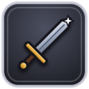
Attack All champions Guard All champions Provoke Neutral skill Dispel Neutral skill Toughness Passive · Any champion Might Passive · Any champion Swiftness Passive · Any champion 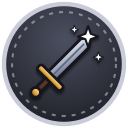
Keen Edge Passive · Any champion Deep Well Passive · Any champion Second Wind Passive · Any champion Quick Hands Passive · Any champion Ironclad Union Jump Start Arclight Built to Hold Passive · Bulwark-7 · Nature Flywheel Passive · Sawtooth · Nature Arc Transfer Passive · Arclight · Nature Dug In Passive · Howitzer · Nature Oil Can Passive · Patchwork · Nature 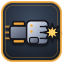
Piston Punch Bulwark-7 Steam Vent Bulwark-7 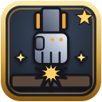
★ Hydraulic Slam Bulwark-7 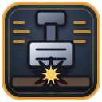
Piledriver Bulwark-7 Bunker Down Bulwark-7 Reactive Plating Passive · Bulwark-7 Rip Saw Sawtooth Shrapnel Spin Sawtooth 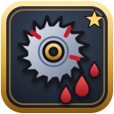
★ Grinder Sawtooth 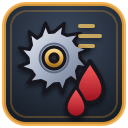
Limb Shear Sawtooth Rev Up Sawtooth 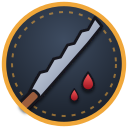
Serrated Passive · Sawtooth 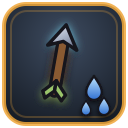
Arc Bolt Arclight 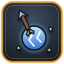
Discharge Arclight ★ Chain Surge Arclight 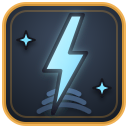
Overload Coil Arclight 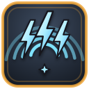
Static Field Arclight Feedback Loop Passive · Arclight 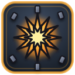
Flak Burst Howitzer AP Round Howitzer ★ Siege Shell Howitzer 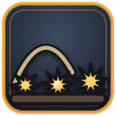
Mortar Walk Howitzer Shell Shock Howitzer Big Guns Passive · Howitzer 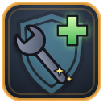
Field Weld Patchwork Overclock Patchwork ★ Assemble Scrapbot Patchwork Jury Rig Patchwork Coolant Flush Patchwork Maintenance Drone Passive · Patchwork 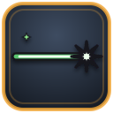
Beam Shot Scrapbot (summon) Beam Burst Scrapbot (summon) Bloodtusk Horde 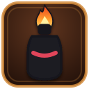
Molotov Drekka Firegut 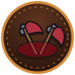
Red Mist Passive · Krug · Nature Tusk and Board Passive · Mogra · Nature 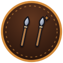
Two on the Trail Passive · Vashka · Nature Long Fuse Passive · Drekka · Nature Ancestors' Whisper Passive · Hesk · Nature 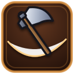
Cleave Krug Skullsplitter 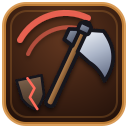
Reckless Swing Krug Skullsplitter 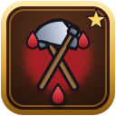
★ Blood Frenzy Krug Skullsplitter 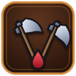
Twin Axes Krug Skullsplitter 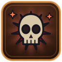
Warchief's Fury Krug Skullsplitter 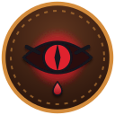
Bloodlust Passive · Krug Skullsplitter 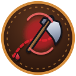
Grudge Axe Passive · Krug Skullsplitter 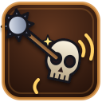
Skull Rattler Mogra Ironhide 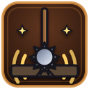
Ground Pound Mogra Ironhide 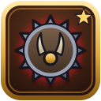
★ Iron Hide Mogra Ironhide 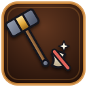
Bonebreaker Mogra Ironhide 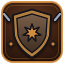
Hold the Line Mogra Ironhide Thick Skull Passive · Mogra Ironhide 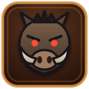
Call the War Boar Vashka Spearthrower 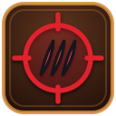
Hunter's Mark Vashka Spearthrower 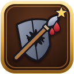
★ Gutpiercer Vashka Spearthrower Pinning Throw Vashka Spearthrower 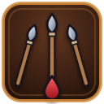
Volley of Spears Vashka Spearthrower 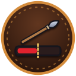
Steppe Hunter Passive · Vashka Spearthrower 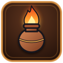
Firepot Drekka Firegut 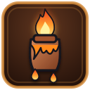
Napalm Jar Drekka Firegut 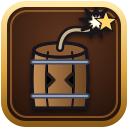
★ Powder Keg Drekka Firegut Cinder Spray Drekka Firegut 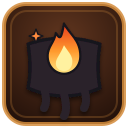
Sticky Tar Drekka Firegut Pyromaniac Passive · Drekka Firegut Spirit Ward Old Mother Hesk 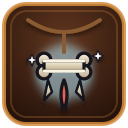
Bone Charm Old Mother Hesk ★ Drums of the Horde Old Mother Hesk 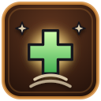
Ancestor's Balm Old Mother Hesk Totem of Stone Old Mother Hesk 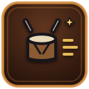
Quickstep Drums Old Mother Hesk Ancestral Watch Passive · Old Mother Hesk 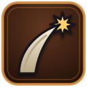
Gore War Boar (summon) 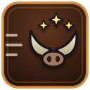
Tusk Charge War Boar (summon) Kingdom of Aldmere Shieldbearer Sir Garrick Vane Heroic Passive · Wren / Garrick · alt passive 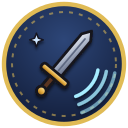
Spellblade's Rhythm Passive · Wren · Nature Sworn Shield Passive · Garrick · Nature Ember-Warm Passive · Aldous · Nature Undimmed Passive · Liesl · Nature 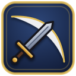
Power Slash Wren 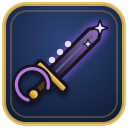
Arcane Edge Wren 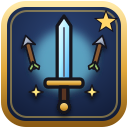
★ Thunderclap Wren 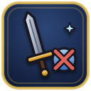
Mageslayer Wren Runed Thrust Wren Arcane Ward Passive · Wren Smite Sir Garrick Vane Consecrate Sir Garrick Vane ★ Oathguard Sir Garrick Vane Hammer of Judgement Sir Garrick Vane Lionheart Sir Garrick Vane Retribution Passive · Sir Garrick Vane Shield of the Realm Passive · Sir Garrick Vane Aimed Shot Mara Holt Ricochet Mara Holt ★ Powder Shot Mara Holt Pistol Whip Mara Holt Volley Fire Mara Holt Deadeye Passive · Mara Holt Fireball Aldous Emberfall Ignite Aldous Emberfall ★ Inferno Aldous Emberfall Flame Lance Aldous Emberfall Mantle of Flame Aldous Emberfall Kindling Passive · Aldous Emberfall Sacred Light Sister Liesl Guardian Angel Sister Liesl ★ Prayer of Dawn Sister Liesl Benediction Sister Liesl Censure Sister Liesl First Light Sister Liesl Mercy Passive · Sister Liesl Stoneleaf Accord Anvil-Patient Passive · Durgan · Nature Deep Foundation Passive · Hilda · Nature Fletcher's Line Passive · Aelira · Nature Crawling Venom Passive · Faelan · Nature Evergreen Passive · Elowen · Nature Hammerfall Durgan Anvilbeard Anvil Strike Durgan Anvilbeard ★ Mountain Breaker Durgan Anvilbeard Forge Strike Durgan Anvilbeard Quake Hammer Durgan Anvilbeard Grudge Passive · Durgan Anvilbeard Shield Bash Hilda Stonewall Shieldwall Hilda Stonewall ★ Stand Firm Hilda Stonewall Boulder Toss Hilda Stonewall Bulwark of the Accord Hilda Stonewall Unbreakable Passive · Hilda Stonewall Swift Arrows Aelira Swiftwind Arrow Rain Aelira Swiftwind ★ Hawkeye Aelira Swiftwind Piercing Shot Aelira Swiftwind Steady Aim Aelira Swiftwind Keen Eye Passive · Aelira Swiftwind Venom Bolt Faelan Thornshot Envenom Faelan Thornshot ★ Thornvolley Faelan Thornshot Crippling Bolt Faelan Thornshot Toxic Barrage Faelan Thornshot Debilitating Venom Passive · Faelan Thornshot Regrowth Elowen Greenmantle Entangle Elowen Greenmantle ★ Bloom of Spring Elowen Greenmantle Barkskin Elowen Greenmantle Thornlash Elowen Greenmantle Wind at the Back Elowen Greenmantle Forest Stride Passive · Elowen Greenmantle Verdant Aura Passive · Elowen Greenmantle
The Tideborn Anchor Chain Tharos Razorfin Stinging Veil Octavia Inkveil Turncoat Verse Seraphine Wavecaller Tide-Runner Passive · Tharos · Nature Snapback Passive · Grubblefin · Nature Sea-Sung Passive · Seraphine · Nature Vanish in Ink Passive · Octavia · Nature Gift of the Reef Passive · Maren · Nature Trident Lunge Tharos Razorfin Riptide Tharos Razorfin ★ Blood in the Water Tharos Razorfin Feeding Frenzy Tharos Razorfin Undertow Tharos Razorfin Blood Scent Passive · Tharos Razorfin Nibble Flurry Grubblefin Slippery Scales Grubblefin ★ Gurgle Frenzy Grubblefin Barnacle Bite Grubblefin Tail Whip Grubblefin Choking Bite Grubblefin Tiny Target Passive · Grubblefin Siren's Hush Seraphine Wavecaller Dirge of the Deep Seraphine Wavecaller ★ Lure Song Seraphine Wavecaller Drowning Chorus Seraphine Wavecaller Song of the Depths Seraphine Wavecaller Echo Passive · Seraphine Wavecaller Ink Double Octavia Inkveil Tentacle Snare Octavia Inkveil ★ Ink Cloud Octavia Inkveil Ink Whip Octavia Inkveil Crushing Grip Octavia Inkveil Ink Sac Passive · Octavia Inkveil Healing Tide Maren Pearlheart Tide Pool Maren Pearlheart ★ Pearl Barrier Maren Pearlheart Reef Bloom Maren Pearlheart Riptide Crash Maren Pearlheart Rimefall Maren Pearlheart Backwash Passive · Maren Pearlheart Tidecaller Passive · Maren Pearlheart Ink Lash Ink Illusion (summon)
The Crimson Court Tear Apart Passive · Gorehound Noble Blood Passive · Vesper · Nature Pit-Forged Passive · Malgrath · Nature Slips the Line Passive · Gorehound · Nature Overflowing Cup Passive · Morwenna · Nature Crimson Lunge Vesper Nightshade Night Waltz Vesper Nightshade ★ Execute Vesper Nightshade Exsanguinate Vesper Nightshade Throat Tear Vesper Nightshade Mist Form Vesper Nightshade Riposte Passive · Vesper Nightshade Hellfire Slam Malgrath the Unbound Demonic Roar Malgrath the Unbound ★ Infernal Wrath Malgrath the Unbound Pit Chains Malgrath the Unbound Sulphur Breath Malgrath the Unbound Blood Pact Malgrath the Unbound Brimstone Hide Passive · Malgrath the Unbound Kiss of Ruin Seraxa Thornwing Shadowstep Seraxa Thornwing ★ Dance of Knives Seraxa Thornwing Wing Carve Seraxa Thornwing Predator's Grace Seraxa Thornwing Flurry Passive · Seraxa Thornwing Rend Gorehound Savage Maul Gorehound ★ Hellhound Howl Gorehound Hamstring Gorehound Feral Lunge Gorehound Bloodhound Passive · Gorehound Blight Hex Morwenna Bloodweaver Blood Siphon Morwenna Bloodweaver ★ Blood Communion Morwenna Bloodweaver Crimson Mend Morwenna Bloodweaver Wither Morwenna Bloodweaver Blood Ward Morwenna Bloodweaver Quickened Blood Morwenna Bloodweaver Withering Curse Passive · Morwenna Bloodweaver
The Pale Host The Slow March Passive · Mordrek · Nature Lord of the Mound Passive · Barrow · Nature Bone-Thrift Passive · Cadris · Nature Breathless Passive · Vaun · Nature The Dead Listen Passive · Mortessa · Nature Grave Cross Mordrek the Interred Graveside Chill Mordrek the Interred ★ Last Rites Mordrek the Interred Plant the Marker Mordrek the Interred Second Grave Passive · Mordrek the Interred Tomb Slab Barrow Grasping Hands Barrow ★ Barrow Wall Barrow Crypt Breaker Barrow Hold the Grave Barrow Graveyard Fence Barrow Burrow Barrow Feast of the Fallen Passive · Barrow Bone Dart Cadris Gravecall Shambling Rise Cadris Gravecall ★ Charnel Volley Cadris Gravecall Rot Shot Cadris Gravecall Marrow Pierce Cadris Gravecall Toll of the Dead Passive · Cadris Gravecall Shroud Arrow Vaun Shroudfletch Withering Shot Vaun Shroudfletch ★ Pall of Arrows Vaun Shroudfletch Graveshot Vaun Shroudfletch Scatter of Bones Vaun Shroudfletch Deathmark Passive · Vaun Shroudfletch Grave Mend Mortessa Coffin Mortessa ★ Second Burial Mortessa Hex of Ruin Mortessa Soul Siphon Mortessa Stolen Hours Mortessa Keeper of the Coffin Passive · Mortessa Clawing Grasp Shambler (summon)
The Riftborn Fixed Point Passive · Thassor · Nature Unblinking Passive · Vharo · Nature Finisher Passive · Nyx · Nature Dead Weight Thassor ★ Deadfall Thassor Event Horizon Thassor Collapsing Fist Thassor Graviton Guard Thassor Singularity Thassor Crushing Field Passive · Thassor Ray Vharo Prism Lance Vharo Starfire Vharo Glare Vharo Focus Vharo Recall Vharo Clarion Resh Quickening Chord Resh Thrum Resh Discord Resh Steady Tone Resh Null Bolt Nyx ★ Unmake Nyx Silencing Gyre Nyx Phase Nyx Collapse Point Nyx Attune: Gravity Orin Grand Chord Orin Attune: Light Orin Attune: Void Orin Conduct Orin
Monsters of Ashfall Road Hardened Crust Passive · Magma Slime Reassemble Passive · Bone Rattler Troll Blood Passive · Cave Troll Grave Hunger Passive · Crypt Ghoul Incorporeal Passive · Banshee Iron Plating Passive · Rust Golem Second Intention Passive · Disgraced Duelist Fading Passive · Pale Phantom Pack Hunter Passive · Grave Hound Dread Armor Passive · Fallen Knight Stone Skin Passive · Stone Gargoyle